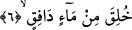
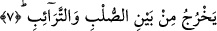

koklatılmamış maddelerden kendisini ilk baştan yaratmaya kadir olan Allah’ın onu bir
kez daha yaratmaya kadir olduğu gerçeği ortaya çıksın. Hattâ aklen düşünülecek olursa
ikinci kez yaratmaya daha da kadir olduğu gerçeği ile yüzyüze gelsin ve böylece
yeniden yaratılma günü ve amellere karşılığının verileceği o cezâ günü için kendisine
fayda verecek şeyleri yapsın ve yaptığı herşeyi kayda geçiren görevli meleğe kötü
şeyler yazdırmasın.
6. Atılan bir sudan yaratıldı.
Bu cümle yukarda geçen soruya cevap olarak gelen bir cümledir. O zaman burada
şöyle denmiş oluyor: İnsan neden yaratıldı? Sonra bu soruya cevap veriliyor: İnsan
fışkıran, atılan bir sudan yaratıldı. Âyette yer alan “dafik” kelimesinin anlamı içinde
hem süratle dökülme ve hem de akma mânâsı vardır.
Âyette geçen “fışkıran su” deyimi “fışkırtılmış su” şeklinde tefsir olunur. Çünkü
meninin bizzat kendisinin fışkırması düşünülemez. Meni olsa olsa fışkırtılmış olur ve
böylece nitelenir. Bu kelimenin âyette “dafik” şeklinde nitelendirilmesi kişiden çıkması
gözönüne alınmaksızın yapılmış bir deyimlemedir.
Bazı âlimler “dâfik” kelimesini “medfûkun” şeklinde ana rahmine dökülmüş su olarak
anlamışlardır. Bu takdirde “mâun dâfikun” deyimi “sırrun kâtimun/gizleyen sır değil de
gizlenmiş sır”, “ıyşetun radiyetun/razı olan hayat değil de razı olunan hayat” şeklinde
olmuş olurki burası da “maun dafik” fışkıran su değil de fışkırtılmış su şeklinde olmuş
olur. Âyette yer alan “maun dafik” deyiminden maksad ise ana rahminde birbiriyle
karışmış, anneyle babanın suyudur. Nitekim âyetin bundan sonra gelen kısmı bize bunu
açıkça göstermektedir.
7. (O su erkeğin) sırtı ile (kadının) göğüs kafesi arasından çıkar.
“O” fışkıran “su” (erkeğin) sırtı ile (kadının) göğüs kafesi arasından çıkar.”
Burada âyetin deyimiyle yer alan “terâib” kelimesi kadının göğüs kafesi kemikleri ile
göğüs kemikleri arası demektir.
Hz. Ali ve İbn Abbas’a göre âyette ifâde edilen bu mânâ kadının iki memesi arasıdır.
Kamus’ta ifâde edildiğine göre teraib göğüs kemikleri veya o iki göğüs kemiğini izleyen
kemikler ya da iki göğüs arası demektir. Terkûteyn sağ göğüsten dört kemik, soldan da